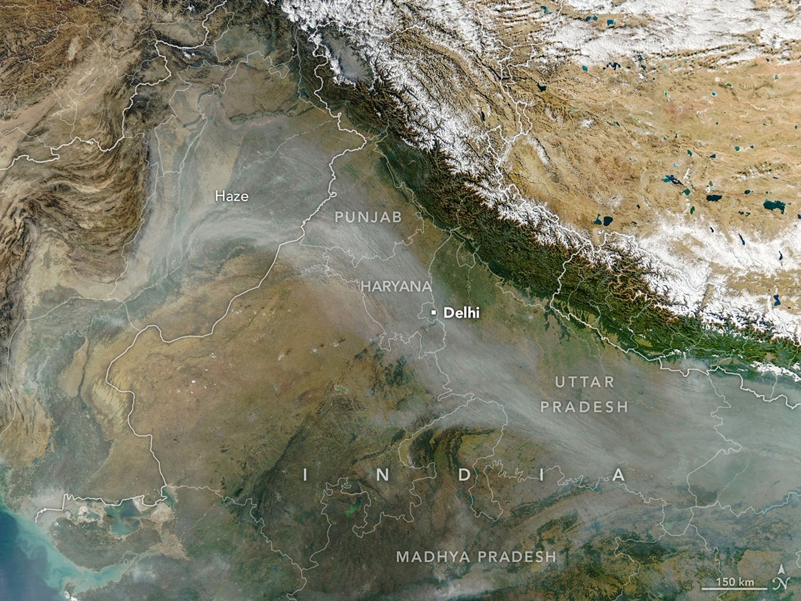

New Timing for Stubble Burning in India
Every year for decades, long rivers of smoke and haze have spread across the Indo-Gangetic Plain in northern India from October to December. This is when farmers in Punjab, Haryana, Uttar Pradesh, Madhya Pradesh, and other states burn leftover plant material, or stubble, after the rice harvest.
When winds are weak and the atmosphere becomes stagnant, the haze can push air pollution levels several times higher than limits recommended by the World Health Organization. Smoke from stubble burning typically mixes with particles and gases from other sources—such as industry, vehicles, domestic heating and cooking, fireworks, and dust storms—to form dense smog. Scientists consider stubble burning to be a major contributor to these pollution episodes.
In some ways, the seasonal timing of stubble fires in 2025 followed typical patterns. Air quality deteriorated in Delhi and several other cities for about a month after crop fires intensified during the last week of October, explained Hiren Jethva, an atmospheric scientist at NASA’s Goddard Space Flight Center. For about a decade, Jethva has tracked stubble burning in India using satellite observations and vegetation data to estimate fire-season intensity.
The MODIS (Moderate Resolution Imaging Spectroradiometer) instrument on NASA’s Aqua satellite captured this image of smoky haze darkening skies over much of the plain on November 11, 2025. According to news reports, it was the first of several days that year when pollution levels exceeded 400 on India’s air quality index—the highest category on the scale. As in past years, poor air quality prompted school closures and stricter controls on construction activity in some regions.
However, the daily timing of burning has changed in recent years. Previously, most fires were lit in the early afternoon between 1 p.m. and 2 p.m. local time, based on observations from MODIS instruments aboard the Terra and Aqua satellites. But stubble fires now tend to occur later in the day, Jethva said.
He identified this shift by analyzing data from GEO-KOMPSAT-2A, a South Korean geostationary satellite launched in 2018 that collects observations every 10 minutes. Most stubble fires now occur between 4 p.m. and 6 p.m., meaning that fire-monitoring systems relying only on MODIS or similar sensors like VIIRS (Visible Infrared Imaging Radiometer Suite) miss many events. “Farmers have changed their behavior,” Jethva said.
Analysis of GEO-KOMPSAT-2A data showed that stubble burning activity in Punjab and Haryana was moderate in 2025 compared to recent years. Fire counts were higher than in 2024, 2020, and 2019, but lower than in 2021, 2022, and 2023.
Researchers at the Indian Space Research Organization have also noted the shift in fire timing. A Current Science study published in 2025 reported that peak fire activity moved from about 1:30 p.m. in 2020 to roughly 5:00 p.m. in 2024. A multi-satellite analysis released in December 2025 by the International Forum for Environment, Sustainability, & Technology (iForest) reached similar conclusions.
Meanwhile, determining how much stubble burning contributes to poor air quality in Delhi compared to other pollution sources remains an active area of research. “Studies report contributions ranging from 10 to 50 percent,” said Pawan Gupta, a NASA research scientist specializing in air quality.
Gupta estimates that stubble burning contributes 40 to 70 percent of pollution on certain days, dropping to 20 to 30 percent when averaged over a month or burning season, and to under 10 percent when averaged annually. “Meteorological conditions—such as a shallow boundary layer and low temperatures during the burning season—add extra complexity,” he said.
The timing of fires may further influence air quality impacts. Modeling studies suggest that evening fires can lead to stronger overnight buildups of particle pollution than early-afternoon fires, because the planetary boundary layer becomes shallower at night and winds weaken, allowing pollutants to accumulate near the surface.